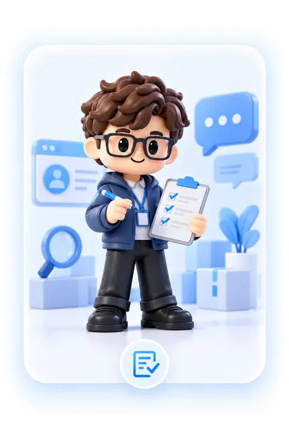

资深架构师
负责产品技术架构、系统稳定性与能力协同，把复杂能力沉淀为可持续迭代的产品底座。
技术、市场、外贸与 AI 应用协同，让威诺智贸通既有稳定的产品底座，也懂真实业务场景。
负责产品技术架构、系统稳定性与能力协同，把复杂能力沉淀为可持续迭代的产品底座。
负责品牌定位、传播表达、市场策略与增长路径，让产品更接近真实获客与推广场景。
把客户开发、询盘、报价、跟进与客户经营中的真实经验带进产品设计与演示逻辑。
把大模型、智能代理与自动化能力真正落到业务场景中，让 AI 变成可用的工作能力。
它们不是几个独立机器人，而是围绕客户开发、询盘承接与自然增长协同工作的智能角色。
持续寻找潜在客户、市场信号与新机会，并把零散信息整理成可读的客户画像。
结合客户背景与沟通场景，准备更自然的开发内容、触达切入点与后续跟进节奏。

INQUIRY AGENT帮助收集需求、补齐关键信息并整理商机，让访客问题更快进入销售处理流程。
把买家问题与产品知识沉淀成 SEO / GEO 内容资产，服务自然增长和长期可见性。
我们不希望外贸团队为了“使用 AI”再学习一套复杂方法。系统应该主动整理信息、减少重复动作、提醒关键节点，并把清晰选择留给业务人员。
告诉我们你的产品、目标市场和当前团队最卡的环节，我们会按真实业务场景展示威诺智贸通。
告诉我们你的行业、产品和目标市场，我们会按真实外贸场景展示产品。